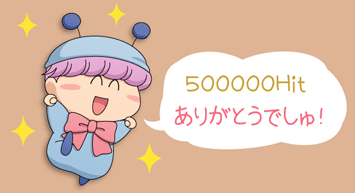
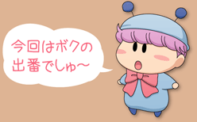
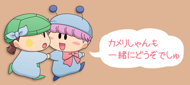
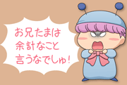
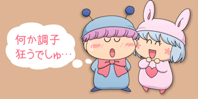

|
||||
| ||||

「わがまま☆フェアリー ミルモでポン！」ファンサイト、『ムルモ屋本舗』へようこそ！
みんなでミルモでポン！を応援しましょう！(^^)

２０１１年５月２５日 ５０００００Ｈｉｔ達成！
ムルモ屋本舗へいつもお越しくださりありがとうございます(^^)
|
『わがまま☆フェアリー ミルモでポン！』 再放送情報 |


 |

|
||||||||||||||||||||||||||


|
||||||||||||||||


| |
||

 |
 |

「ムルモ屋本舗」はリンクフリーです。
<img src="http://www.murumoya.com/banner.gif">
○このホームページは原作者、出版社およびアニメ制作会社からは一切独立しています。 |